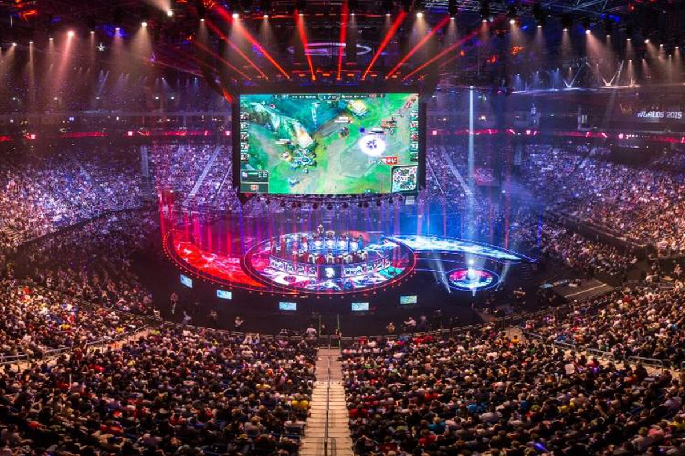

Histoire de Riot Games
Riot Games est une entreprise américaine d'édition et de développement de jeux vidéo fondée en 2006 et située à Los Angeles, en Californie. Elle organise aussi plusieurs tournois de sport électronique.
La société n'a eu qu’un seul jeu publié à son actif durant plus de dix ans,League of Legends, sorti en 2009 et qui lui confère toute sa notoriété au vu de la popularité qu'il rencontre et maintient à travers le temps. Au cours de l'année 2020, cependant, l'entreprise publie Legends of Runeterra, Valorant et League of Legends: Wild Rift
Riot Games est fondé en 2006 par Brandon Beck (connu sous le pseudonyme de « Ryze ») et Marc Merrill (connu sous le pseudonyme « Tryndamere »). En 2009, Riot Games lance League of Legends.
Quelques-uns des employés notables de Riot Games sont : Steve Feak, un des fondateurs de Defense of the Ancients (un mod de Warcraft III dont League of Legends est directement inspiré) ; Steve Mescon ; ainsi que quelques anciens employés de Blizzard Entertainment.
En mars 2016, Riot Games rachète le studio Radiant Entertainment, qui est un studio ayant travaillé sur les jeux Rising Thunder et sur Stonehearth avec « la volonté de diversifier leur catalogue ».
Le 16 décembre 2016, BAMTech achète pour 300 millions de dollars les droits de retransmission jusqu'en 2023 des Championnats du monde de League of Legends à Riot Games. Riot Games précise que cet accord concerne la distribution et la monétisation d'émissions de compétitions professionnelles pour le jeu vidéo League of Legends jusqu'en 2023 en contre-partie de 50 millions de dollars par an et un pourcentage des revenus publicitaires.

Fin 2017, Beck et Merrill ont confié les activités quotidiennes et la gestion globale de l’équipe de League of Legends à trois employés de longue date. Dylan Jadeja, Scott Gelb et le français Nicolo Laurent sont désormais respectivement chefs de la technologie (CTO), chef de l’exploitation (COO) et directeur général (CEO). En mai 2018, Riot Games employait 2 500 personnes et exploitait 24 bureaux dans le monde entier.
Le 25 mai 2018, le contrat de 350 millions de dollars entre Riot Games et BAMTech annoncé en décembre 2016 est annulé au profit d'un contrat de diffusion de la League of Legends sur ESPN+ à partir de juin 2018.
En décembre 2018, Riot games investit dans Hypixel Studios pour le futur jeu Hytale13. Ils sortent en juin 2019 Teamfight Tactics et en janvier 2020 Legends of Runeterra.